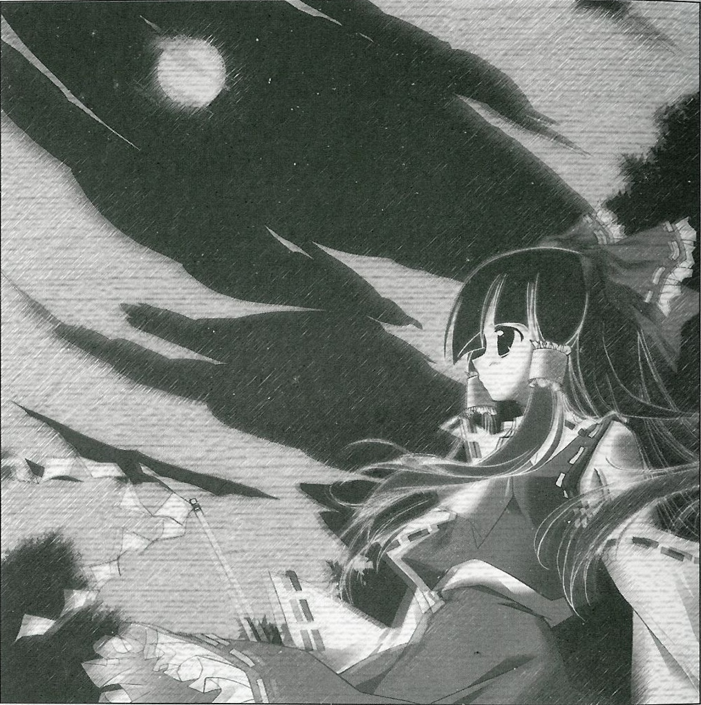

|
Season 119. Classification: Special Feature Article Memo Editor:
Aya Shameimaru
The Night Without Dawn A severe, rarely-seen incident leaves tensions runningX Day X Month - A severe incident of unknown cause has created tension throughout Gensokyo. This is considerably long night without a hint of dawn, and the moon has stopped moving across the sky as well. All this on the night of a full moon. There are few beings in Gensokyo who are not affected by the full moon. Because of this, madness is now spreading throughout Gensokyo. The cause and movite are completely unknown, and because of her stubbornness to fight in these situations, I've decided to move before waiting for the shrine maiden to do so, to see Gensokyo's nervousness. Eventually, no matter the location, due to being unable to tell the exact time because of the momentary interruption in the movement of the full moon, there is no telling how fast it will move when it starts again, or if the sun will rise without a similar problem. What anyone would gain from stopping time during the night, as well as how to resolve the problem, will remain a mystery. I heard rumors that the shrine maiden went on a rampage again, and due to her sudden willingness to resolve the indicent, I regret that I was unable to observe her movements. However, I'm still concerned about something. That is to say, is there a youkai that would benefit from stopping the movement of the moon? Is there anyone other than youkai who would do something like this? Maybe I should think about any humans would do something like this instead. It is said that nights are long during the fall, but that night was too long. Even the youkai whose motto is that fun can be found in any kind of situation were irritated by this severe incident. I can't think of anyone who would have been the culprit behind that incident though. And what kind of power would they have possessed to be able to so something like that? And, is there any need to actively pursue it? Again, while gathering data, I heard an especially interesting rumor. The moon on the night of the endless night and the moon on the night the next day were completely different. They were very slight, but the color and the light were both different. Also, the energy that the moon radiated was different as well. Perhaps, on that day, the moon might have been reborn Time was needed for the ceremony of reincarnation, so the moon that night needed to be stopped. Thinking about it in that way, it's no wonder. If that's the case, that incident wasn't the doings of youkai, but it might have been natural phenomenon of the real moon. Certainly, it is unlikely that the youkai who are easily influenced by the moon would able to think to stop it so easily. I should have considered it to be an act of the real moon, and not of those who become influenced by it. Still, if the rumors of the shrine maiden's rampage are true, I find her arbitrary actions to be rather rash, just like during the other incidents. To handle a dangerous incident on that scale in the same simple manner as before was extremely hazardous. It is necessary to quickly investigate the root of the problem first.
(Aya Shameimaru)
|
|
Touhou Eiyashou ~ Imperishable Night. Many were hoping to welcome the harvest moon in autumn, but the actual full moon was slightly different. The major youkai were troubled by this moon that had lost it's power, and they worked together with humans, who weren't aware of the incident at all, to find the missing real moon. Stopping a night like this, until the true full moon is returned to Gensokyo... |
| [PREVIOUS ARTICLE : Night Parade of One Hundred Oni] | [INDEX] | [NEXT ARTICLE : Great Barrier Incident] |